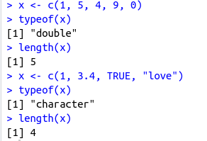
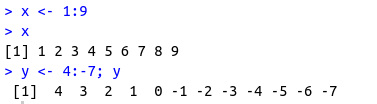
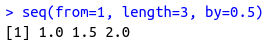
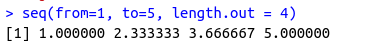
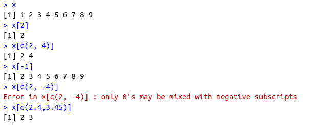
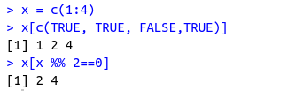
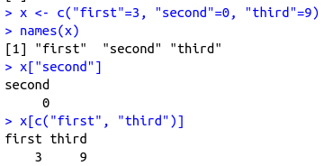
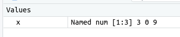
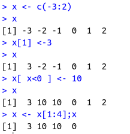

Vectors in R
A
vector contains element of the same type. The data types can be logical, integer, double, character, complex or raw.
Note :
1. typeof() : To check vector data type
2. length() : To calculate length of vector
~~~~~~~~~~~~~~~~~~~~~~~~~~~~~~~~~
Creating a vectorVectors are generally created using the c() function.
Since, a vector must have elements of the same type, this function will try and coerce elements to the same type, if they are different.
Coercion is from lower to higher types

#Creating a vector of consecutive numbers

#Let's create a similar stuff using
seq() 

~~~~~~~~~~~~~~~~~~~~~~~~~~~~~~~~~
Accessing Elements of Vector#Using integer as index

#Using logical vector as index

#Using character vector as index
 
~~~~~~~~~~~~~~~~~~~~~~~~~~~~~~~~~
Modify vectors 
~~~~~~~~~~~~~~~~~~~~~~~~~~~~~~~~~
To empty a vector x <- NULL